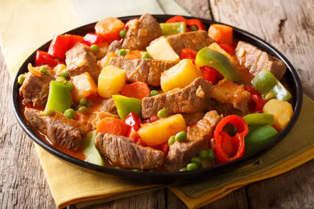

Kaldereta

Mga Sangkap
- 1 kilo ng beef stew meat (karne ng baka, hiniwa sa maliliit na piraso)
- 3 tbsp cooking oil
- 1 malaking sibuyas, hiniwa
- 4 cloves ng bawang, minced
- 2 medium potatoes, hiniwa sa bilog
- 2 medium carrots, hiniwa sa bilog
- 1 cup red bell pepper, hiniwa
- 1/2 cup green peas (opsyonal)
- 1/2 cup tomato paste
- 1 can (400g) ng diced tomatoes
- 1/4 cup soy sauce
- 1 tsp patis (fish sauce)
- 1/2 cup liver spread (opsyonal, para sa rich flavor)
- 1 tsp chili flakes (opsyonal, kung gusto mo ng maanghang)
- 1 1/2 cups beef broth
- Salt and pepper to taste